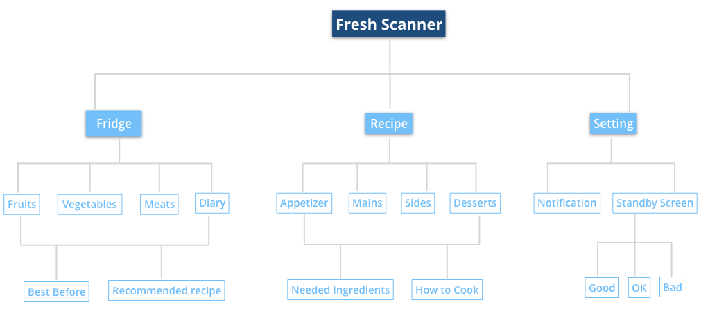

Fresh Scanner is an app that helps users to manage their about to expire food, and reduce the food wastage by synchronizing user's phone with a device .
- TYPE
- UX RESEARCH/ UX DESIGN
- SKILLS
-
METHOD KIT
SECONDARY RESEARCH
SURVEY
USABILITY TESTING
LOW-HIGH PROTOTYPING
- MY ROLE
- I contributed to Design Research, Digital Prototype Design, Final User Experience & User Interface Design and User Testing.
PROJECT BACKGROUND
This is a school multidisciplinary collaborative project; 5 people as a team. 2 students were from an industrial design program and 3 students (me included) were from UXD Program. We were given a challenge by using Design Method Kit to find out problems in our daily life and society, using Design Thinking Method to figure the solutions, then our final goal of the project was to design a physical product and its mobile app. We conducted the research together, industrial design students were contributing to 3D Rendering and the 3D printing model, UX design classmates were in charging of idea exploration, sketch.PROBLEM
A problem we wanted to tackle was reducing food wastage. One of the causes is people don't know when the food is about to expire like vegetables. Although, some food like meats and dairies have the best before day on the products, people are likely forgetting it since they are busy with their work and life.SOLUTION
Fresh Scanner device:can be placed inside of the fridge, the food can be detected by the device automatically or be scanned by closing the barcode of the food to the device
Fresh Scanner app:
by synchronizing the phone with the device, users can easily monitor their food’s freshness. Also, the feature “Recipe” is made of encouraging the users to manage their about to expire food.
 RESEARCH
RESEARCH
The survey consisted of the following questions
Q1. How do you shop for groceries?
Q2. How many times do you shop for grocery in a month?
Q3. How do you check for an expiration date on various food items? Provide an answer in detail.
Q4. If an item is expired, would you still use it or throw it away? Provide an answer in detail.
Q5. How do you plan on keeping perishable items fresh for a longer time?
Q6. Do you think a high-tech fridge can help prolong a food item’s freshness level?
Q7. How much are you willing to spend on purchasing a new fridge?
Based on their feedback, here are some conclusion that we have:
1: Go to shops physically to buy groceries.
2: Don’t use food beyond the expiration date.
3: Not spend more than 3000 cad on a smart fridge.
4: Customers would be willing to meal plan around food they knew was about to expire in their fridge since mark-up for basic smart
fridges was beyond 3000 cad, we researched more about devices that can actually work a regular fridge and control food wastage.
1: Smart food containers
2: Smart packaging
3: Multi-purpose food scanners
4: Quickly delivered frozen foods
5: Food expiration mobile applications After discussing the team decided to food ahead with food scanners.
https://docs.google.com/spreadsheets/d/1ZJSvp47Qw1Zscov_ndd8Kb6-NIJ1LgXGBBwD6PcMzLc/edit#gid=828392585
 PROCESS
PROCESS
Information Architecture

 WIREFRAME
WIREFRAME
there is two way the food is being detected:
1: Fruits and Vegetables: the device has a sensor can detect the percentage of ethylene which tells the condition of fruits and vegetables
2:Meats and Diary: the user will be noticed by the best before date form the package
Recipes
the main idea behind the app is to reduce food wastage. the first step that the app offered is to monitor the food and notify users when it expires, the next step is to show users how the food can be used. Recommended recipe: the recipe is based on the certain type of meat to give the recommendation, the recommended recipe can be accessed under meats category. Recipe feature: this recipe is made on the daily cooking base sorted by appetizer, mains, sides, and desserts. The idea was from my personal life experience. Cause I'm not good at cooking, I need recipes whenever I cook. I got an idea that if users go on their way for grocery shopping they can check their food usage and conditions, and inspired by the recipes, they do not need to download other apps.
 FIANL APP
FIANL APP
Liked something here?
I want to hear from you! Shoot me an email